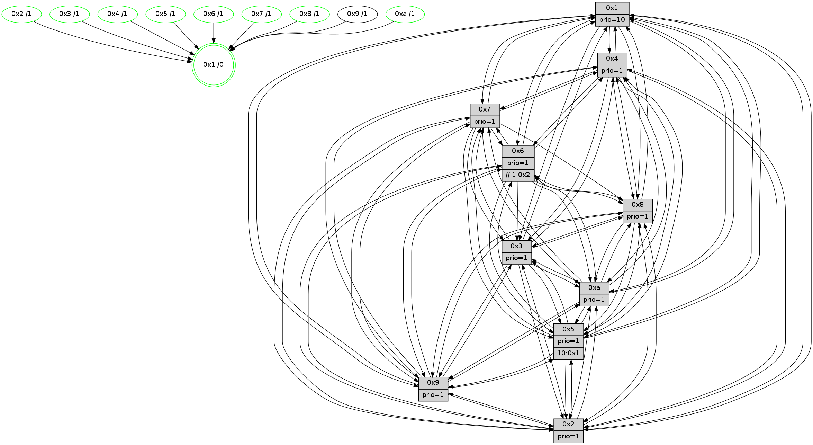

>> << IDX [start] -100 -25 -5 +0 +5 +25 +100 [1505.0006001]
 Previous packets
----------------------------------------------------------------------
1500.241831 beacon01(faad) #0 coord=01,02,03,04,05,06,07,0a,09,08 cycle=688.0ms assoc
-- color-indic=1 64 94 76
1500.251813 beacon02(faad) #0 coord=01,02,03,04,05,06,07,0a,09,08 cycle=688.0ms assoc 64 07 47
1500.261813 beacon03(faad) #0 coord=01,02,03,04,05,06,07,0a,09,08 cycle=688.0ms assoc 64 7d 0a
1500.271814 beacon04(faad) #0 coord=01,02,03,04,05,06,07,0a,09,08 cycle=688.0ms assoc 64 0a e0
1500.281815 beacon05(faad) #0 coord=01,02,03,04,05,06,07,0a,09,08 cycle=688.0ms assoc 64 70 ad
1500.291814 beacon06(faad) #0 coord=01,02,03,04,05,06,07,0a,09,08 cycle=688.0ms assoc 64 fe 7a
1500.301815 beacon07(faad) #0 coord=01,02,03,04,05,06,07,0a,09,08 cycle=688.0ms assoc 64 84 37
1500.311820 beacon0a(faad) #0 coord=01,02,03,04,05,06,07,0a,09,08 cycle=688.0ms assoc 64 f5 3c
1500.331820 beacon08(faad) #0 coord=01,02,03,04,05,06,07,0a,09,08 cycle=688.0ms assoc 64 01 a6
1500.343680 [Hello(10): seq=889 sym=6,2,3,8,7,5,9,4,1 sysInfo=hasWarning stat=6:14,10,8,5/2:12,2,10,2/3:0,7,2,15/8:11,9,12,5/7:6,3,9,10/5:0,2,3,3/9:11,6,10,1/4:8,5,7,3/1:13,0,6,1]
1500.346618 [Color(1) seq=636 @0:0 prio=10]
1500.352185 [Color(4) seq=495 @0:0 prio=1]
1500.354097 [Color(8) seq=555 @0:0 prio=1]
1500.355875 [Hello(9): seq=900 sym=2,5,3,4,7,6,8,10,1 sysInfo=hasWarning stat=2:8,8,11,13/5:11,13,2,0/3:3,12,7,7/4:3,6,3,3/7:15,13,3,5/6:7,9,9,1/8:1,15,1,8/10:12,8,4,0/1:11,10,6,1]
1500.366211 [Color(7) seq=484 @0:0 prio=1]
----------------------------------------------------------------------
1501.029961 beacon01(faad) #0 coord=01,02,03,04,05,06,07,0a,09,08 cycle=688.0ms assoc
-- color-indic=1 64 50 78
1501.039944 beacon02(faad) #0 coord=01,02,03,04,05,06,07,0a,09,08 cycle=688.0ms assoc 64 c3 49
1501.049944 beacon03(faad) #0 coord=01,02,03,04,05,06,07,0a,09,08 cycle=688.0ms assoc 64 b9 04
1501.059944 beacon04(faad) #0 coord=01,02,03,04,05,06,07,0a,09,08 cycle=688.0ms assoc 64 ce ee
1501.069944 beacon05(faad) #0 coord=01,02,03,04,05,06,07,0a,09,08 cycle=688.0ms assoc 64 b4 a3
1501.079944 beacon06(faad) #0 coord=01,02,03,04,05,06,07,0a,09,08 cycle=688.0ms assoc 64 3a 74
1501.089944 beacon07(faad) #0 coord=01,02,03,04,05,06,07,0a,09,08 cycle=688.0ms assoc 64 40 39
1501.099949 beacon0a(faad) #0 coord=01,02,03,04,05,06,07,0a,09,08 cycle=688.0ms assoc 64 31 32
1501.119949 beacon08(faad) #0 coord=01,02,03,04,05,06,07,0a,09,08 cycle=688.0ms assoc 64 c5 a8
1501.133124 [Hello(1): seq=866 sym=4,2,9,5,10,3,8,6,7 sysInfo=coloring-mode-on,ColoringModeRequestCalled stat=4:11,3,6,4/2:7,2,14,7/9:14,2,15,2/5:2,10,5,11/10:8,4,7,8/3:1,2,5,13/8:7,0,2,6/6:13,11,2,3/7:11,2,9,2]
1501.136158 [Hello(6): seq=957 sym=3,2,5,4,7,9,8,10,1 sysInfo=hasWarning stat=3:2,3,8,0/2:8,15,3,1/5:7,9,12,6/4:7,12,5,9/7:3,2,2,0/9:10,4,6,11/8:7,8,13,9/10:12,2,15,13/1:13,11,8,1]
1501.138866 [Hello(2): seq=953 sym=4,5,7,6,3,9,8,10,1 sysInfo=hasWarning stat=4:7,0,5,14/5:3,14,8,4/7:7,1,8,2/6:4,10,3,0/3:5,7,8,2/9:5,3,15,10/8:2,14,1,15/10:5,3,15,11/1:4,10,2,0]
1501.142053 [Color(10) seq=546 @0:0 prio=1]
1501.145013 [Color(2) seq=533 @0:0 prio=1]
1501.150114 [Color(6) seq=589 @0:0 prio=1 >>1.@2,1.@3,1.@4]
1501.152242 [Hello(5): seq=957 sym=7,6,4,3,1,9,8,10,2 sysInfo=hasWarning stat=7:2,2,10,1/6:7,14,2,0/4:13,9,1,0/3:2,14,4,3/1:10,12,0,0/9:10,1,7,11/8:6,1,0,7/10:4,11,11,9/2:4,8,2,9]
1501.156092 [Hello(3): seq=957 sym=1,7,6,4,8,9,10,5 sysInfo=hasWarning stat=1:10,7,10,0/7:8,14,9,15/6:10,3,12,3/4:11,4,12,14/8:14,15,2,8/9:4,0,2,1/10:4,0,7,5/5:6,0,4,3]
1501.158796 [Color(3) seq=586 @0:0 prio=1]
1501.161262 [Color(5) seq=493 @0:0 prio=1 >10.@1,1.@2,1.@3,1.@4]
----------------------------------------------------------------------
1501.818092 beacon01(faad) #0 coord=01,02,03,04,05,06,07,0a,09,08 cycle=688.0ms assoc
-- color-indic=1 64 ec 7d
1501.828074 beacon02(faad) #0 coord=01,02,03,04,05,06,07,0a,09,08 cycle=688.0ms assoc 64 7f 4c
1501.838076 beacon03(faad) #0 coord=01,02,03,04,05,06,07,0a,09,08 cycle=688.0ms assoc 64 05 01
1501.848076 beacon04(faad) #0 coord=01,02,03,04,05,06,07,0a,09,08 cycle=688.0ms assoc 64 72 eb
1501.858077 beacon05(faad) #0 coord=01,02,03,04,05,06,07,0a,09,08 cycle=688.0ms assoc 64 08 a6
1501.868074 beacon06(faad) #0 coord=01,02,03,04,05,06,07,0a,09,08 cycle=688.0ms assoc 64 86 71
1501.878076 beacon07(faad) #0 coord=01,02,03,04,05,06,07,0a,09,08 cycle=688.0ms assoc 64 fc 3c
1501.888079 beacon0a(faad) #0 coord=01,02,03,04,05,06,07,0a,09,08 cycle=688.0ms assoc 64 8d 37
1501.908080 beacon08(faad) #0 coord=01,02,03,04,05,06,07,0a,09,08 cycle=688.0ms assoc 64 79 ad
1501.919265 [Hello(9): seq=901 sym=2,5,3,4,7,6,8,10,1 sysInfo=hasWarning stat=2:9,9,11,13/5:12,14,2,0/3:4,13,7,7/4:3,6,3,3/7:15,14,3,5/6:8,10,9,1/8:1,15,1,8/10:12,9,4,0/1:12,10,6,1]
1501.923494 [Color(1) seq=637 @0:0 prio=10]
1501.925025 [Hello(7): seq=957 sym=2,3,5,6,8,4,9,10,1 sysInfo=hasWarning stat=2:2,4,4,6/3:8,13,7,6/5:8,14,5,5/6:12,10,5,13/8:3,7,0,0/4:1,3,1,0/9:10,15,0,2/10:1,12,12,7/1:2,15,3,0]
1501.928790 [Color(7) seq=485 @0:0 prio=1]
1501.930078 [Hello(10): seq=890 sym=6,2,3,8,7,5,9,4,1 sysInfo=hasWarning stat=6:14,11,8,5/2:12,3,10,2/3:1,8,2,15/8:11,10,12,5/7:7,4,9,10/5:1,3,3,3/9:12,6,10,1/4:8,6,7,3/1:14,1,6,1]
1501.933368 [Color(4) seq=496 @0:0 prio=1]
1501.942321 [Hello(8): seq=901 sym=5,2,3,7,9,6,4,10,1 sysInfo=hasWarning stat=5:6,1,1,3/2:13,0,13,14/3:6,2,1,6/7:10,9,3,0/9:3,6,2,5/6:15,1,14,1/4:8,14,9,2/10:13,4,9,5/1:10,13,8,0]
1501.945143 [Color(8) seq=556 @0:0 prio=1]
----------------------------------------------------------------------
1502.606221 beacon01(faad) #0 coord=01,02,03,04,05,06,07,0a,09,08 cycle=688.0ms assoc
-- color-indic=1 64 d8 65
1502.616204 beacon02(faad) #0 coord=01,02,03,04,05,06,07,0a,09,08 cycle=688.0ms assoc 64 4b 54
1502.626205 beacon03(faad) #0 coord=01,02,03,04,05,06,07,0a,09,08 cycle=688.0ms assoc 64 31 19
1502.636204 beacon04(faad) #0 coord=01,02,03,04,05,06,07,0a,09,08 cycle=688.0ms assoc 64 46 f3
1502.646205 beacon05(faad) #0 coord=01,02,03,04,05,06,07,0a,09,08 cycle=688.0ms assoc 64 3c be
1502.656205 beacon06(faad) #0 coord=01,02,03,04,05,06,07,0a,09,08 cycle=688.0ms assoc 64 b2 69
1502.666205 beacon07(faad) #0 coord=01,02,03,04,05,06,07,0a,09,08 cycle=688.0ms assoc 64 c8 24
1502.676209 beacon0a(faad) #0 coord=01,02,03,04,05,06,07,0a,09,08 cycle=688.0ms assoc 64 b9 2f
1502.696210 beacon08(faad) #0 coord=01,02,03,04,05,06,07,0a,09,08 cycle=688.0ms assoc 64 4d b5
1502.708051 [Hello(1): seq=867 sym=4,2,9,5,10,3,8,6,7 sysInfo=coloring-mode-on,ColoringModeRequestCalled stat=4:11,4,6,4/2:8,3,14,7/9:15,2,15,2/5:3,11,5,11/10:9,5,7,8/3:2,3,5,13/8:8,1,2,6/6:14,12,2,3/7:12,3,9,2]
1502.711100 [Hello(5): seq=958 sym=7,6,4,3,1,9,8,10,2 sysInfo=hasWarning stat=7:2,3,10,1/6:7,14,2,0/4:13,10,1,0/3:2,14,4,3/1:11,13,0,0/9:11,1,7,11/8:7,2,0,7/10:5,11,11,9/2:4,8,2,9]
1502.713596 [Color(10) seq=547 @0:0 prio=1]
1502.715328 [Color(5) seq=494 @0:0 prio=1 >10.@1,1.@2,1.@3,1.@4]
1502.717790 [Hello(6): seq=958 sym=3,2,5,4,7,9,8,10,1 sysInfo=hasWarning stat=3:3,4,8,0/2:8,15,3,1/5:8,10,12,6/4:7,13,5,9/7:4,3,2,0/9:11,4,6,11/8:8,9,13,9/10:13,2,15,13/1:14,12,8,1]
1502.720385 [STC(1) #0.266 tree-change,inconsistent-stability,stable,to-color d=0]
1502.722085 [Hello(3): seq=958 sym=1,7,6,4,8,9,10,5 sysInfo=hasWarning stat=1:11,8,10,0/7:9,15,9,15/6:10,3,12,3/4:11,5,12,14/8:15,0,2,8/9:5,0,2,1/10:5,0,7,5/5:6,1,4,3]
1502.724587 [Color(6) seq=590 @0:0 prio=1 >>1.@2,1.@3,1.@4]
1502.728446 [Color(3) seq=587 @0:0 prio=1]
1502.731644 [Hello(2): seq=954 sym=4,5,7,6,3,9,8,10,1 sysInfo=hasWarning stat=4:7,1,5,14/5:4,15,8,4/7:8,2,8,2/6:4,11,3,0/3:6,8,8,2/9:6,3,15,10/8:3,15,1,15/10:6,3,15,11/1:5,11,2,0]
1502.736046 [Color(2) seq=534 @0:0 prio=1]
----------------------------------------------------------------------
1503.394353 beacon01(faad) #0 coord=01,02,03,04,05,06,07,0a,09,08 cycle=688.0ms assoc
-- color-indic=1 64 64 60
1503.404335 beacon02(faad) #0 coord=01,02,03,04,05,06,07,0a,09,08 cycle=688.0ms assoc 64 f7 51
1503.414336 beacon03(faad) #0 coord=01,02,03,04,05,06,07,0a,09,08 cycle=688.0ms assoc 64 8d 1c
1503.424335 beacon04(faad) #0 coord=01,02,03,04,05,06,07,0a,09,08 cycle=688.0ms assoc 64 fa f6
1503.434335 beacon05(faad) #0 coord=01,02,03,04,05,06,07,0a,09,08 cycle=688.0ms assoc 64 80 bb
1503.444336 beacon06(faad) #0 coord=01,02,03,04,05,06,07,0a,09,08 cycle=688.0ms assoc 64 0e 6c
1503.454337 beacon07(faad) #0 coord=01,02,03,04,05,06,07,0a,09,08 cycle=688.0ms assoc 64 74 21
1503.464343 beacon0a(faad) #0 coord=01,02,03,04,05,06,07,0a,09,08 cycle=688.0ms assoc 64 05 2a
1503.484341 beacon08(faad) #0 coord=01,02,03,04,05,06,07,0a,09,08 cycle=688.0ms assoc 64 f1 b0
1503.495303 [STC(5)->1 #0.266 tree-change,inconsistent-stability,stable,to-color d=1]
1503.497069 [Hello(10): seq=891 sym=6,2,3,8,7,5,9,4,1 sysInfo=hasWarning stat=6:15,12,8,5/2:13,4,10,2/3:2,9,2,15/8:12,11,12,5/7:7,4,9,10/5:1,4,3,3/9:12,6,10,1/4:8,7,7,3/1:15,1,7,1]
1503.500418 [Hello(4): seq=958 sym=5,8,6,2,3,9,7,10,1 sysInfo=hasWarning stat=5:5,14,3,4/8:9,1,1,0/6:15,9,0,2/2:13,10,7,3/3:11,4,14,1/9:9,15,8,2/7:10,6,4,0/10:14,5,0,14/1:5,8,9,1]
1503.503688 [Hello(8): seq=902 sym=5,2,3,9,6,4,10,1 sysInfo=hasWarning stat=5:7,2,1,3/2:14,1,13,14/3:7,3,1,6/9:4,6,2,5/6:0,2,14,1/4:8,14,9,2/10:13,5,9,5/1:11,13,9,0]
1503.506266 [Color(1) seq=638 @0:0 prio=10]
1503.508638 [STC(8)->1 #0.266 tree-change,inconsistent-stability,stable,to-color d=1]
1503.510299 [Color(8) seq=557 @0:0 prio=1]
1503.514596 [Hello(7): seq=958 sym=2,3,5,6,8,4,9,10,1 sysInfo=hasWarning stat=2:3,5,4,6/3:9,14,7,6/5:9,15,5,5/6:13,11,5,13/8:4,8,0,0/4:1,4,1,0/9:11,15,0,2/10:2,13,12,7/1:3,15,4,0]
1503.519434 [Hello(9): seq=902 sym=2,5,3,4,7,6,8,10,1 sysInfo=hasWarning stat=2:10,10,11,13/5:13,15,2,0/3:5,14,7,7/4:4,7,3,3/7:15,15,3,5/6:9,11,9,1/8:2,0,1,8/10:13,10,4,0/1:13,11,7,1]
1503.522517 [STC(4)->1 #0.266 tree-change,inconsistent-stability,stable,to-color d=1]
1503.524259 [STC(7)->1 #0.266 tree-change,inconsistent-stability,stable,to-color d=1]
1503.526233 [TreeStatus(7)-.->1 #0.266 tree-change,inconsistent-stability,stable child=1]
1503.528682 [Color(7) seq=486 @0:0 prio=1]
1503.533025 [STC(10)->1 #0.266 tree-change,inconsistent-stability,stable,to-color d=1]
1503.535341 [TreeStatus(9)-.->1 #0.266 tree-change,inconsistent-stability,stable child=1]
----------------------------------------------------------------------
1504.182484 beacon01(faad) #0 coord=01,02,03,04,05,06,07,0a,09,08 cycle=688.0ms assoc
-- color-indic=1 64 a0 6e
1504.192466 beacon02(faad) #0 coord=01,02,03,04,05,06,07,0a,09,08 cycle=688.0ms assoc 64 33 5f
1504.202466 beacon03(faad) #0 coord=01,02,03,04,05,06,07,0a,09,08 cycle=688.0ms assoc 64 49 12
1504.212468 beacon04(faad) #0 coord=01,02,03,04,05,06,07,0a,09,08 cycle=688.0ms assoc 64 3e f8
1504.222466 beacon05(faad) #0 coord=01,02,03,04,05,06,07,0a,09,08 cycle=688.0ms assoc 64 44 b5
1504.232466 beacon06(faad) #0 coord=01,02,03,04,05,06,07,0a,09,08 cycle=688.0ms assoc 64 ca 62
1504.242468 beacon07(faad) #0 coord=01,02,03,04,05,06,07,0a,09,08 cycle=688.0ms assoc 64 b0 2f
1504.252471 beacon0a(faad) #0 coord=01,02,03,04,05,06,07,0a,09,08 cycle=688.0ms assoc 64 c1 24
1504.262471 beacon09(faad) #0 coord=01,02,03,04,05,06,07,0a,09,08 cycle=688.0ms assoc 64 4f f3
1504.272473 beacon08(faad) #0 coord=01,02,03,04,05,06,07,0a,09,08 cycle=688.0ms assoc 64 35 be
1504.285648 [Hello(1): seq=868 sym=4,2,9,5,10,3,8,6,7 sysInfo=coloring-mode-on,ColoringModeRequestCalled stat=4:11,4,7,4/2:9,4,14,7/9:0,2,15,3/5:3,11,6,11/10:10,5,8,8/3:3,4,5,13/8:8,2,3,6/6:14,13,2,3/7:13,4,10,3]
1504.288374 [Hello(2): seq=955 sym=4,5,7,6,3,9,8,10,1 sysInfo=hasWarning stat=4:8,1,6,14/5:5,15,9,4/7:9,3,9,3/6:4,11,3,0/3:6,8,8,2/9:7,3,15,11/8:4,0,2,15/10:7,3,15,11/1:6,12,2,0]
1504.291527 [Color(2) seq=535 @0:0 prio=1]
1504.293304 [Color(10) seq=548 @0:0 prio=1]
1504.297409 [Color(6) seq=591 @0:0 prio=1 >>1.@2,1.@3,1.@4]
1504.300610 [Hello(3): seq=959 sym=1,7,2,4,8,9,10,5 sysInfo=hasWarning stat=1:12,9,10,0/7:10,0,10,0/2:0,1,0,0/4:12,5,13,14/8:0,1,3,8/9:6,0,2,2/10:6,0,8,5/5:7,1,5,3]
1504.303629 [Hello(5): seq=959 sym=7,6,4,3,1,9,8,10,2 sysInfo=hasWarning stat=7:3,4,11,1/6:8,15,2,0/4:14,11,2,0/3:3,15,4,3/1:12,14,1,0/9:12,1,7,12/8:8,3,1,7/10:6,11,11,9/2:5,9,2,9]
1504.306768 [Color(5) seq=495 @0:0 prio=1 >10.@1,1.@2,1.@3,1.@4]
1504.308865 [Color(3) seq=588 @0:0 prio=1]
----------------------------------------------------------------------
1504.970617 beacon01(faad) #0 coord=01,02,03,04,05,06,07,0a,09,08 cycle=688.0ms assoc
-- color-indic=1 64 1c 6b
1504.980599 beacon02(faad) #0 coord=01,02,03,04,05,06,07,0a,09,08 cycle=688.0ms assoc 64 8f 5a
1504.990599 beacon03(faad) #0 coord=01,02,03,04,05,06,07,0a,09,08 cycle=688.0ms assoc 64 f5 17